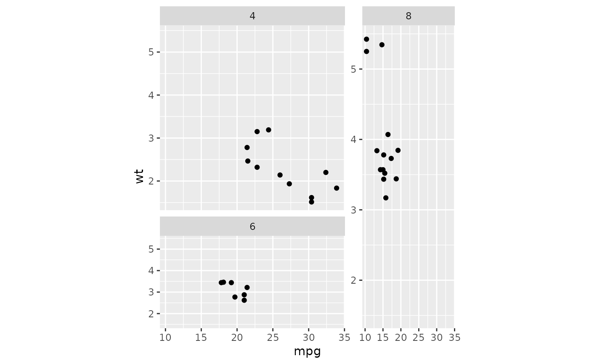

In facet_manual() the layout for panels is determined by a custom design.
Inspired by base-R graphics layout() function, this
variant of facets offers more freedom in how panels are displayed, but
comes with less guarantees that it looks right.
Usage
facet_manual(
facets,
design = NULL,
widths = NULL,
heights = NULL,
respect = FALSE,
drop = TRUE,
strip.position = "top",
scales = "fixed",
axes = "margins",
remove_labels = "none",
labeller = "label_value",
trim_blank = TRUE,
strip = "vanilla"
)Arguments
- facets
A set of variables or expressions quoted by
vars()and defining faceting groups on the rows or columns dimension. The variables can be named (the names are passed tolabeller).For compatibility with the classic interface, can also be a formula or character vector. Use either a one sided formula,
~a + b, or a character vector,c("a", "b").- design
Specification of panel areas in the layout. Can either be specified as a
character(1)string or as amatrix. See examples.- widths, heights
A
numericorunitvector setting the sizes of panels. Anumericvector is converted to relative"null"units. Alternatively, whenNULL(default), the sizes are set per instructions of coord or theme aspect ratio. Note that these widths and heights apply to the cells where panels can be drawn. In between such cells, room will be made to fit plot decoration such as paddings, axes and strips.- respect
A
logical(1). IfTRUE, widths and heights specified in"null"units are proportional. IfFALSE,"null"units in the x- and y-directions can vary independently. Alternatively, whenNULL, therespectparameter takes instructions from the coord or theme.- drop
If
TRUE, the default, all factor levels not used in the data will automatically be dropped. IfFALSE, all factor levels will be shown, regardless of whether or not they appear in the data.- strip.position
By default, the labels are displayed on the top of the plot. Using
strip.positionit is possible to place the labels on either of the four sides by settingstrip.position = c("top", "bottom", "left", "right")- scales
A
character(1)orlogical(1)whether scales are shared across facets or allowed to vary. One of the following:"fixed"orFALSEScales are shared across all facets (default).
"free_x"x-scales are allowed to vary.
"free_y"y-scales are allowed to vary.
"free"orTRUEBoth scales can vary
- axes
A
character(1)orlogical(1)where axes should be drawn. One of the following:"margins"orFALSEOnly draw axes at the outer margins (default).
"x"Draw axes at the outer margins and all inner x-axes too.
"y"Draw axes at the outer margins and all inner y-axes too.
"all"orTRUEDraw the axes for every panel.
- remove_labels
A
character(1)orlogical(1)determining whether axis text is displayed at inner panels. One of the following:"none"orFALSEDisplay axis text at all axes (default).
"x"Display axis text at outer margins and all inner y-axes.
"y"Display axis text at outer margins and all inner x-axes.
"all"orTRUEOnly display axis text at the outer margins.
- labeller
A function that takes one data frame of labels and returns a list or data frame of character vectors. Each input column corresponds to one factor. Thus there will be more than one with
vars(cyl, am). Each output column gets displayed as one separate line in the strip label. This function should inherit from the "labeller" S3 class for compatibility withlabeller(). You can use different labeling functions for different kind of labels, for example uselabel_parsed()for formatting facet labels.label_value()is used by default, check it for more details and pointers to other options.- trim_blank
A
logical(1). WhenTRUE(default), the design will be trimmed to remove empty rows and columns.- strip
A strip specification as one of the following:
An object inheriting from
<Strip>, such as an object created withstrip_vanilla().A strip function, i.e.
strip_vanilla.A string giving such function without the
strip_-prefix, i.e."vanilla".
See also
Other facetting functions:
facet_grid2(),
facet_nested(),
facet_nested_wrap(),
facet_wrap2()
Examples
# A standard plot
p <- ggplot(mtcars, aes(mpg, wt)) +
geom_point()
# The `design` argument can be a character string.
# New rows are indicated by newline symbol (`\n`), which are added
# automatically for multi-line strings.
# The `#`-symbol indicates empty cells.
design <- "
A##
AB#
#BC
##C
"
p + facet_manual(~ cyl, design)
# Alternatively, the `design` argument can be a matrix.
# Using `NA`s will leave the cell empty.
design <- matrix(c(1,2,3,3), 2, 2, byrow = TRUE)
p + facet_manual(~ cyl, design)
# The sizes of columns and rows can be adjusted with the `widths` and
# `heights`parameters respectively.
p + facet_manual(
~ cyl, t(design),
widths = c(2, 1), heights = c(2, 1), respect = TRUE
)
